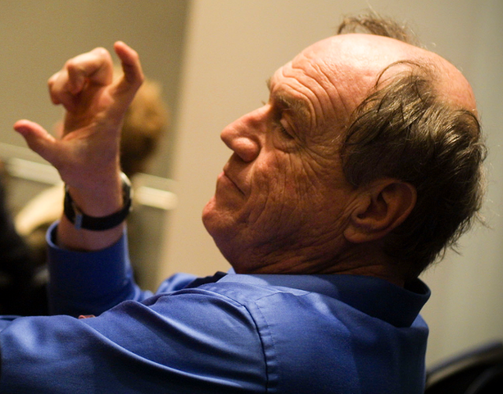

Les Acteurs
Un modèle pour dompter le parallélisme
Quid sum?
Le problème
- A
- B
- C
- D
Un peu d'histoire
- [1973] Carl Hewitt invents Actor for research on AI
- [1986] Joe Armstrong implements the Actor Model in Erlang
- [1995] Erlang is used for the first time in real applications
- [2006] Actor Model is implemented in Scala Standard Library
- [2009] Jonas Bonér creates Akka toolkit
- [2015] first release of Akka.NET
Carl Hewitt
Joe Armstrong
Jonas Boner
Let it crash!